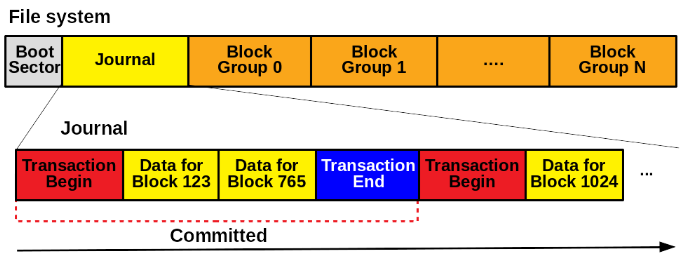

Linux/UNIX文件系统
文件系统给是对文件和目录的组织集合，
本文探究Linux下的设备文件系统，ext系列系统，日志文件系统设计
设备文件系统
设备文件
在Linux内核中，每种设备类型（真正存在or虚拟抽象）的都有与之对应的设备驱动程序，内核通过设备驱动程序的API接口，实现对于设备的操控，虽然每个设备都有差异，但是接口类似，进而能够很好的承接系统调用本身。
1 | |
输入输出设备可分为两大类：块设备（Block Device）和字符设备（Character Device）
- 字符型设备基于每个字符来处理数据。终端、键盘、鼠标都属于字符型设备。
- 块设备每次处理一块设备。块的大小取决于设备类型，硬盘，USB都属于块设备。
磁盘设备
磁盘由盘面，磁道，柱面和扇区构成，数据的读/写按柱面进行，而不按盘面进行。也就是说，一个磁道写满数据后，就在同一柱面的下一个盘面来写，*一个柱面写满后，才移到下一个扇区开始写数据*。读数据也按照这种方式进行，这样就提高了硬盘的读/写效率。
1 | |
磁盘分区可以容纳任何类型的信息，但通常只包含下面之一：
- 文件系统：存放常规文件。
- 数据区域： 充当裸设备。
- 交换区域：内存管理之用 特权进程通过***swapon()和swapoff()***启动和停止磁盘分区操作。
详情可参考：https://blog.csdn.net/hguisu/article/details/7408047
ext系列文件系统
**ext2（second extended file system）**扩展文件系统二世是Linux上使用最广泛的文件系统
ext2文件系统以block为基本单位，包括引导块，超级块，i节点表和数据块部分：
- 引导块可以理解为Linux系统的init()，用来引导操作系统的信息。
- 超级块则是标记了i节点表的大小，逻辑块的大小信息。
- i-list维护了文件类型、属主、硬链接数、指向文件数据块的指针等信息，在ext2中，每个i节点包括了15个指针，前12个指针用于直接索引文件数据库的位置，保证直接访问一击必中，后四个文件块通过指向一个指针块，分化为指向更多的数据块，以保证容纳大体量的文件，同时可以将未指向数据块的指针块中的指针标记未0，则无需未文件黑洞分配空字节数据块。
- 数据块构成了文件和目录，用于存放数据。

ext3文件系统允许journaling日志，journaling日志是在文件系单独的区域存储，每当文件系统意外崩溃，采用journaling日志可以进行恢复，和ext2文件系统不同的是多出了journaling日志的功能。
- ext3提供三种journal日志模式，分别是
writeback、ordered、journal.writeback仅仅会记录元数据的日志，数据可以直接写到磁盘，但是不保证数据比元数据先落盘，这也是性能最好的，但是数据安全性最低；ordered也是仅仅是记录元数据块的日志，这种模式是将文件的数据相关的元数据和数据在一个事务中，当元数据写入到磁盘时候，把对应的数据也写到磁盘，这样是先数据刷盘，再做元数据日志。journal提供数据和元数据的日志，所有的文件数据都先写到日志，然后在写到磁盘，数据需要写2次，性能是最差的。 - ext2中在目录项中查找文件时间的复杂度是
O(n)，ext3中采用了h-trees查找效率提高了很多

ext4是从ext3 fork而来,针对ext4最大的feature就是ext4采用extents机制，替代了indirect block寻址的方式。ext4尽量会把数据存储在连续的block区域内，为了实现这个ext4需要知道三个信息，第一是文件的初始化block.其次是块的数量，最后是磁盘上初始化块的数据，这些信息统一抽象以struct ext4_extent呈现。
详情可参考：https://cloud.tencent.com/developer/article/2074590
虚拟文件系统
除了ext系列文件系统，还有诸如Reiserfs，VFAT，NFS等文件系统，为了能和各种文件系统打交道，应用程序通过虚拟文件系统（VFS）这一层抽象层中定义的通用接口（open()、read()、write()、lseek()….），来实现对不同文件系统的访问。
不同的文件系统对比可参考：https://zhuanlan.zhihu.com/p/689551298

日志文件系统
日志文件系统的作用在于避免了系统崩溃之后，为了确保文件系统的完整，需要遍历整个文件系统，来检查一致性（fcsk）。
日志文件系统会将更新操作记录在专门的磁盘日志文件中，可利用日志重做（redo）任何不完整更新（日志系统总能够保证将文件元数据事务作为一个完整单元提交至磁盘）